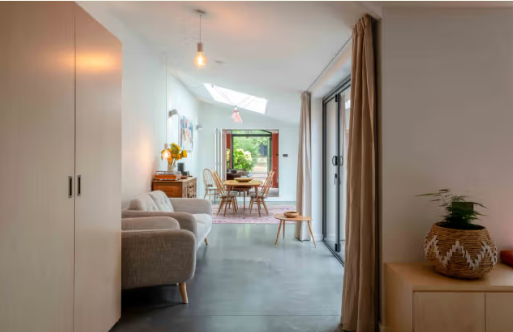
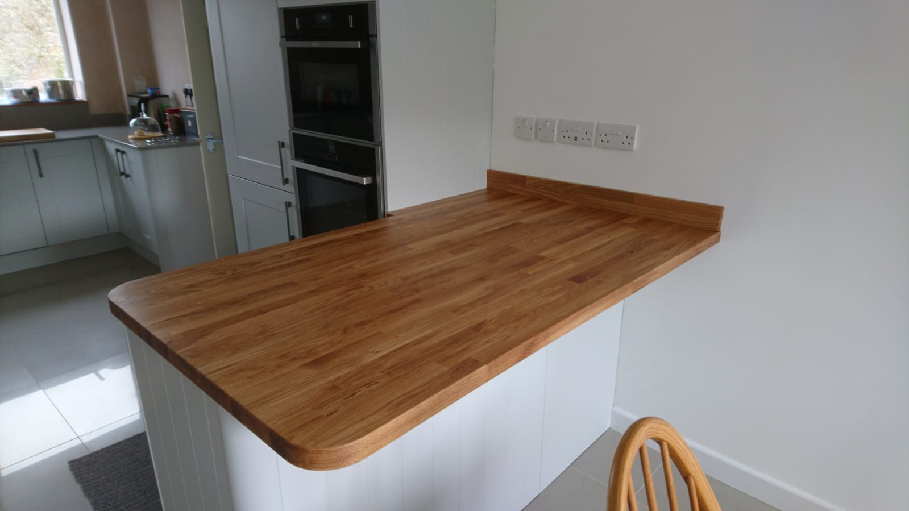
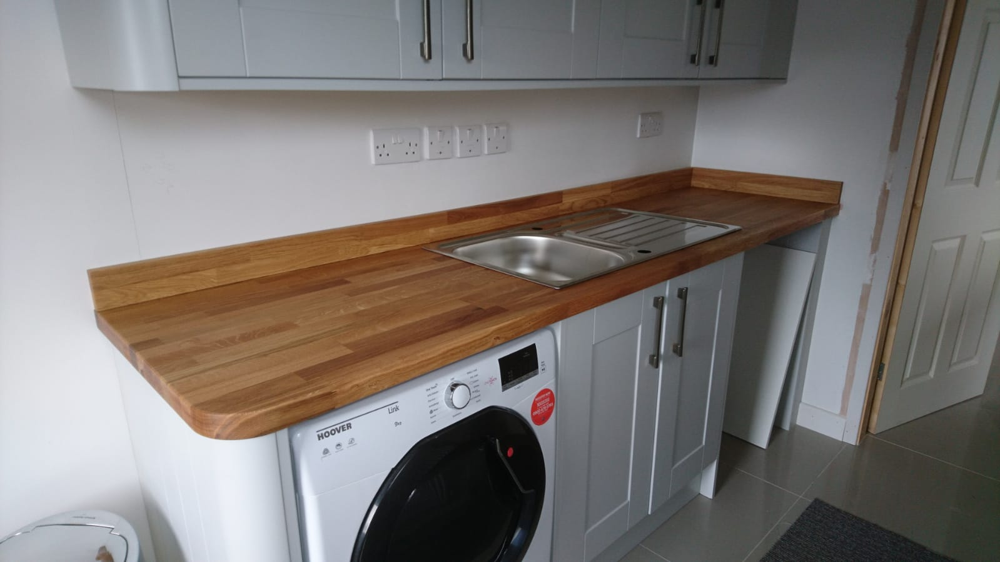
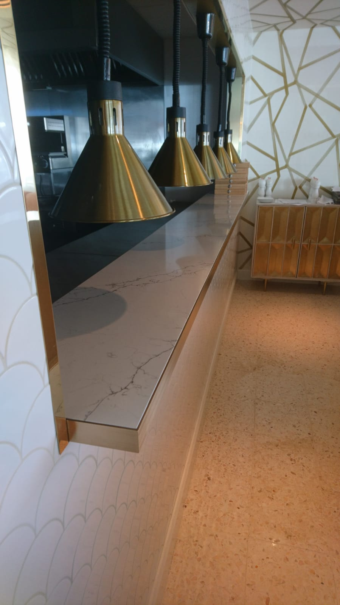
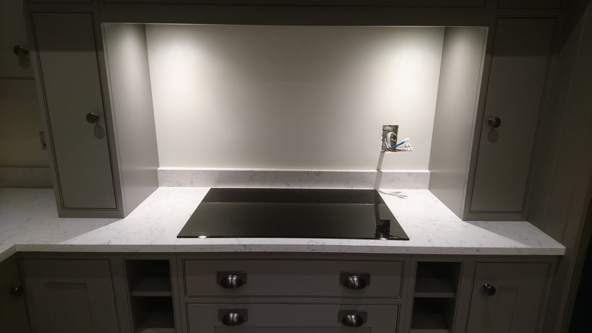
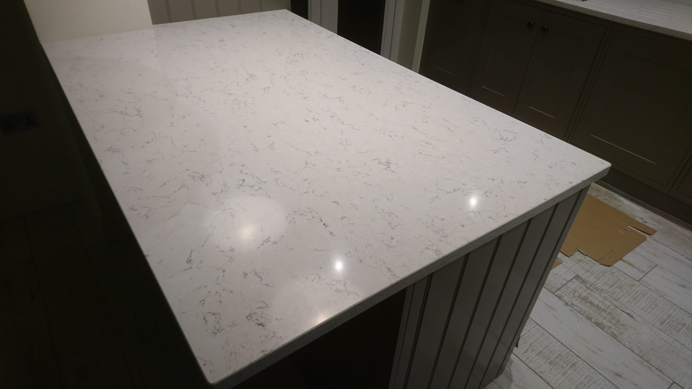
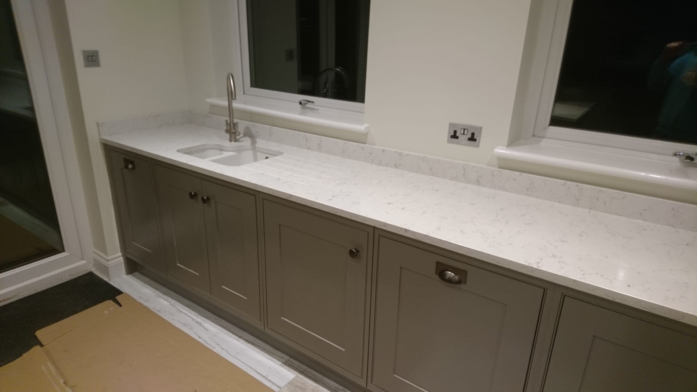
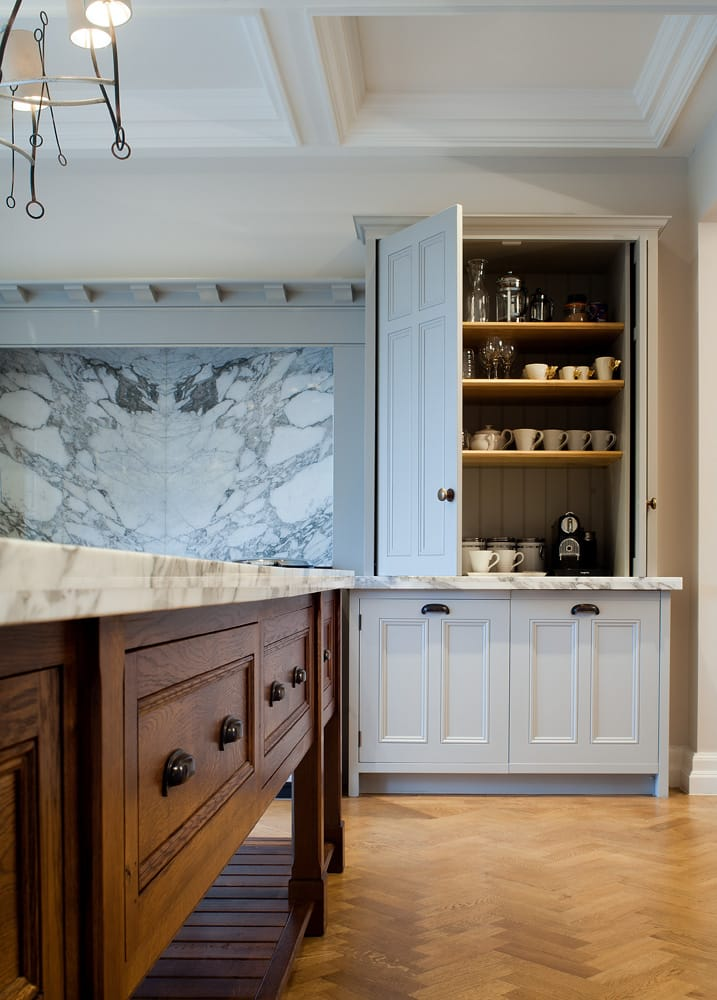
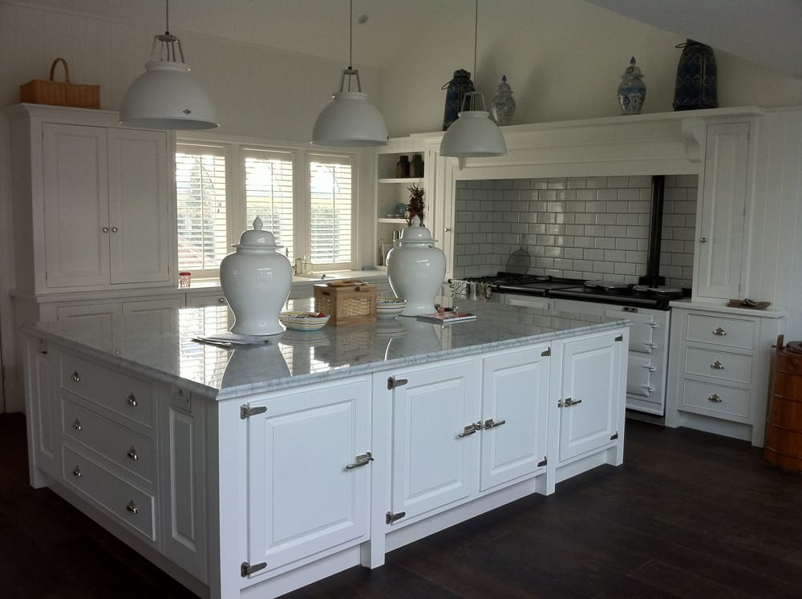

Examples of kitchen projects including bespoke cabinetry, hidden kitchen solutions, custom layouts and premium stone finishes.
Every kitchen is designed to suit the space, the style of the property, and the way the customer wants to use it.
Click on images to enlarge
Hidden Birch Plywood KitchenA concealed kitchen design with sliding panels, ideal for open-plan spaces where a clean and uncluttered finish is needed.Birch Plywood KitchenA warm and contemporary kitchen featuring birch plywood cabinetry with a durable finish and clean modern lines.

Cabinetry DetailClose-up view of the bespoke cabinetry showing the quality of the joinery, finish, and material detail.Concealed Kitchen StorageCustom-built kitchen cabinetry with sliding doors, allowing the kitchen to be neatly hidden away when not in use.Bespoke Kitchen CabinetryCustom plywood cabinetry designed to maximise storage while keeping the overall look simple, practical, and modern.Sliding Door Kitchen SystemThe hidden kitchen revealed, with sliding doors opening to show the full layout and working kitchen space.Matching Built-In CabinetA smaller made-to-measure cabinet designed to complement the main kitchen installation and complete the overall scheme.

Breakfast Bar FeatureA practical breakfast bar adding extra seating, additional worktop space, and a sociable focal point within the kitchen.

Kitchen Layout ViewSide view of the kitchen showing the flow of the layout, cabinetry alignment, and overall balance of the design.

Service Pass OpeningA pass-through feature designed to improve flow between spaces, ideal for entertaining or professional-style kitchen layouts.Kitchen Island with Integrated SinkA spacious island design combining preparation space, storage and an integrated sink to create a practical centrepiece.

Quartz Work SurfacesDurable quartz worktops fitted to give the kitchen a clean, bright and hard-wearing finish.Full Quartz Kitchen InstallationA full kitchen view showing quartz surfaces carried throughout the room for a seamless and high-end finish.

Quartz Breakfast BarA quartz breakfast bar providing additional workspace and casual seating with a smart modern finish.Undermounted Sink DetailQuartz worktop with an undermounted sink for a sleek finish that is both practical and easy to maintain.

Quartz Sink and Drainer DetailClose-up view showing the fitted sink, drainer grooves and the neat finish of the quartz work surface.

Bookmatched Arabescato Vagli MarblePremium marble with mirrored veining, creating a striking statement surface for splashbacks, walls, or feature areas.

Vein-Matched Carrara Marble IslandA carefully matched marble island with continuous veining, giving the kitchen a seamless and high-end finish.